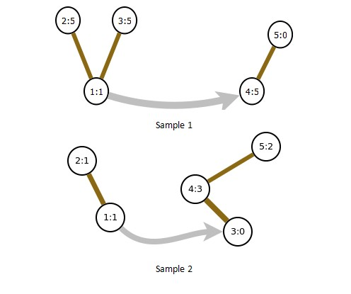

HDU3914. Super Mario
内存限制：6000/2000 MS (Java/Others) 时间限制：32768/32768 K (Java/Others)
题目描述
The Mario series is a series of highly popular and acclaimed video games by Nintendo, featuring Nintendo's mascot Mario and, in many games, his brother Luigi and his best friend Yoshi. Gameplay in the series often centers around jumping on and defeating enemies. The games usually feature simple plots; the most common theme is that of Bowser, the primary antagonist, kidnapping Princess Peach, whom Mario saves. Despite the plots usually being very simple, the Mario role-playing games tend to have deeper plots, often involving enemies other than Bowser (many of which involve Bowser actually teaming up with Mario), with aspirations for world domination. Mario has been featured in 200 games, and the series has sold over 200 million copies total, making it the best-selling video game series of all time.

Today,Mario comes to a forest,whick has many apple trees.These trees are special,the apples are grown in the nodes of the tree,whick is shown as follow.

Numbers in the nodes indicate the amount of apples which are also in this node. The root of a tree is also considered as a node too.
There are many trees in this forest, and some trees are connect by one-way road.

Mario is start at a root, and he can jump along the branches up or down. Before each jump, he has to eat an apple, and after he eat an apple he have to jump up or down. Mario can walk along the roads too. He can walk along a road with at most an apple, or without any apple. These walks need not any apples. He can finish his journey at any root. All the nodes, including normal node and root node, are numbered together from 1 to M.
How many apples is Mario able to eat at most?
Today,Mario comes to a forest,whick has many apple trees.These trees are special,the apples are grown in the nodes of the tree,whick is shown as follow.
Numbers in the nodes indicate the amount of apples which are also in this node. The root of a tree is also considered as a node too.
There are many trees in this forest, and some trees are connect by one-way road.
Mario is start at a root, and he can jump along the branches up or down. Before each jump, he has to eat an apple, and after he eat an apple he have to jump up or down. Mario can walk along the roads too. He can walk along a road with at most an apple, or without any apple. These walks need not any apples. He can finish his journey at any root. All the nodes, including normal node and root node, are numbered together from 1 to M.
How many apples is Mario able to eat at most?
输入格式
Multiple cases, you need process to EOF.
First line contains N, M and S, where N indicates the number of roots, M indicates the number of nodes, and S indicates the start root’s number. 0< N<M <= 20000, S is in the range of [1, M].
Every next N lines contains “ID T A1 … AT”, where ID indicates a node-number of root. T indicates the number of roots ID connect to, and A1 to AT is the node-number of these T roots. ID is in the range of [1, M]; T is in the range of [0, M]; A1 to AT is in the range of [1, N]. Integers in every line are split by single space.
Next M lines describe the M nodes. The i th line describe the i th node, and is formatted as: “AppleAmouts T B1 … BT”. Where AppleAmouts indicates the amount of apple in this node, T indicates the number of nodes this node connect with by branches, and B1 to BT indicate the number of these T nodes. AppleAmounts is in the range of [0, 1000]; T is in the range of [0, M-1]; B1 to BT is in the range of [1,M]. Integers in a line are split by a single space.
First line contains N, M and S, where N indicates the number of roots, M indicates the number of nodes, and S indicates the start root’s number. 0< N<M <= 20000, S is in the range of [1, M].
Every next N lines contains “ID T A1 … AT”, where ID indicates a node-number of root. T indicates the number of roots ID connect to, and A1 to AT is the node-number of these T roots. ID is in the range of [1, M]; T is in the range of [0, M]; A1 to AT is in the range of [1, N]. Integers in every line are split by single space.
Next M lines describe the M nodes. The i th line describe the i th node, and is formatted as: “AppleAmouts T B1 … BT”. Where AppleAmouts indicates the amount of apple in this node, T indicates the number of nodes this node connect with by branches, and B1 to BT indicate the number of these T nodes. AppleAmounts is in the range of [0, 1000]; T is in the range of [0, M-1]; B1 to BT is in the range of [1,M]. Integers in a line are split by a single space.
输出格式
Print the number that how many apple Mario can eat at most.
样例
样例输入
2 5 1
1 1 4
4 0
1 2 2 3
5 1 1
5 1 1
5 1 5
0 1 4
2 5 1
1 1 3
3 0
1 1 2
1 1 1
0 1 4
3 2 3 5
2 1 4样例输出
2
6
Hint
